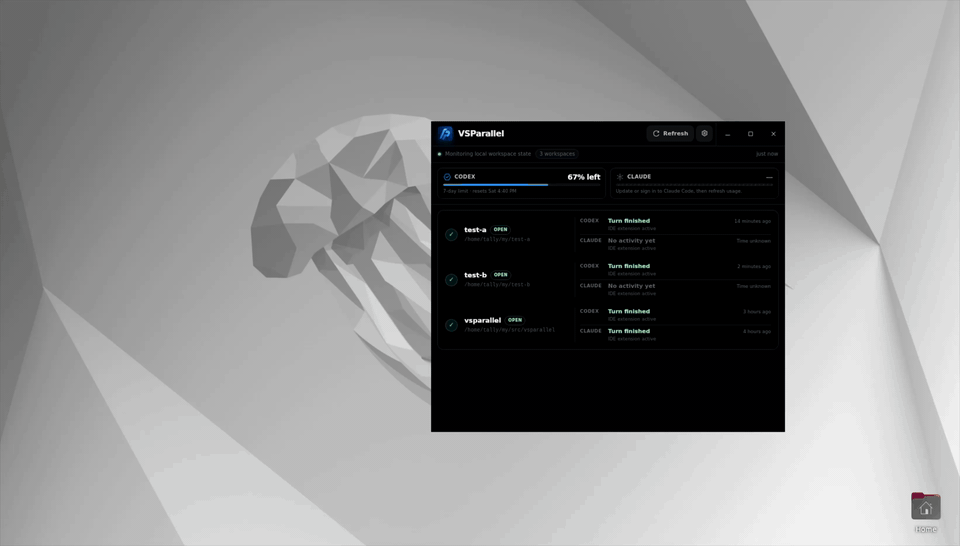

One workspace overview
See active and recently seen VS Code workspaces, names, paths, and open state in one place.
Local-first desktop companion
See workspace activity, focus, Codex and Claude Code lifecycle signals, and usage at a glance—then jump straight to the project that needs you.

Built for parallel work
VSParallel turns scattered editor windows into a calm, actionable overview.
See active and recently seen VS Code workspaces, names, paths, and open state in one place.
Know which window is focused and which local workspaces are actively reporting.
Optional hooks surface coarse activity, turn-finished, and failed or interrupted states.
Open or activate an exact local workspace directly from a card or the native tray.
Keep a compact always-on-top panel nearby or reach active projects from the system tray when available.
No VSParallel account, telemetry, analytics, or advertising. Monitoring metadata stays local.
Local-first by default
VSParallel keeps workspace monitoring on your device. It does not extract, retain, or transmit prompts, responses, source code, terminal contents, transcripts, or Git data.
Read the privacy detailsAvailable across your desktop
VSParallel supports VS Code 1.85 or newer and its code command-line interface.
Ready when you are
Choose your platform above, add the VS Code companion, and start switching.
Current packages are not production code-signed or notarized, so platform warnings may appear. Installation notes